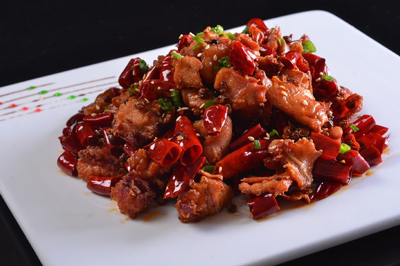

陈皮兔（冷吃兔）是四川自贡地区的汉族传统美食。干香，麻辣，酥脆，陈皮味香；色泽红亮，陈皮味浓，兔肉鲜香入味。陈皮兔丁是冷吃兔的别名。主要原因是食材辅料里面有中药陈皮一味。

主料：兔腿500克
调料：食盐3克 酱油10克 醋5克 葱5克 姜5克 花椒20粒 干辣椒10个 料酒10克 香油1小匙 陈皮5克 白糖3克 植物油150克
陈皮兔丁的做法
1.主要原料和调料，用整兔也可以，我为了省事买的兔腿，三个
2.陈皮用凉水泡上
3.兔腿去骨切成大丁，大约三四公分的丁
4.葱切段，姜切片，蒜拍下就成
5.坐热油在七成热，准备炸兔丁
6.螃蟹稍稍入味以后 会出一些水分将水沥出 然后均匀的包裹上一层生粉。
6.下兔丁，小心被溅着，因为兔子肉水分较大，入锅后最好先盖个盖儿，等炸个半分钟后再开盖用筷子搅开，防止粘上
7.开中火炸就成，炸成金黄色出锅
8.锅坐油，三四成热下花椒和干辣椒，干辣椒最好把籽去掉，这样不会太辣
9.炒两下辣椒后赶紧放泡好的陈皮，煸炒直到辣椒和花椒变成棕红色，陈皮味道出来，然后放入葱姜蒜，炒几下出香气，陈皮要把水滗
10.下兔丁，再下酱油，加饭酒，盐，白糖，然后再放水或者汤，要淹过兔丁才行，因为我们要烧一会儿，小火烧，盖上盖儿
11.大约要烧个二十分钟至半个小时至汤汁变干，差不多只有油就行了，11图为汤汁快干的时候的样子
12.汤汁最后大火收一下就可以了，只剩下明油，然后再点一些醋和香油出锅，稍微晾凉了就可以吃了